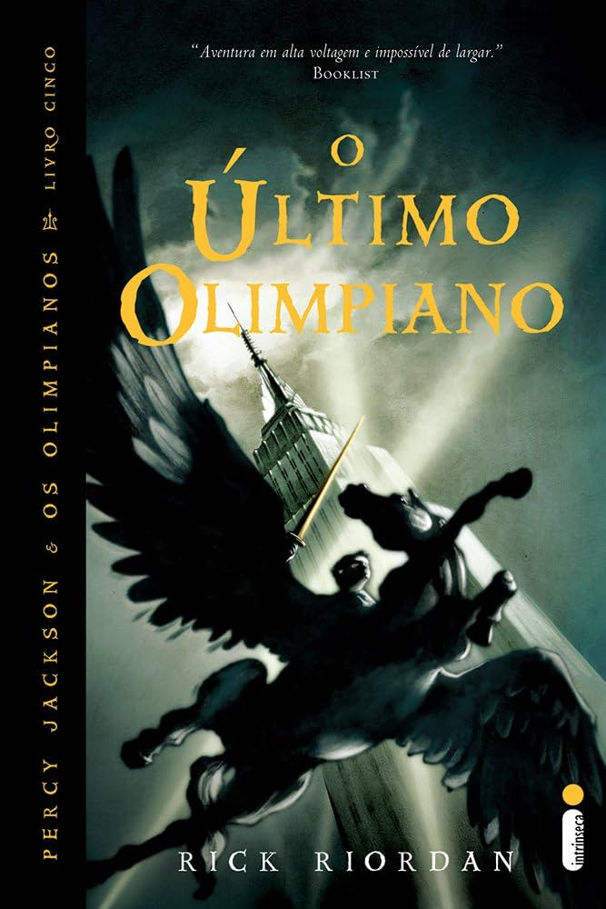

A série de livros narra a história de Percy Jackson: Como ele descobriu que era um Meio-Sangue, e os outros fatos cotidianos desde seus 12 até seus 16 anos, na batalha final contra Cronos. A série conta com cinco livros: O Ladrão de Raios, O Mar de Monstros, A Maldição do Titã, A Batalha do Labirinto e, por fim, O Último Olimpiano, além de contar com livros adicionais como Os Arquivos do Semideus, e Guia Definitivo. Abaixo você irá encontrar a sinopse sobre os cinco principais livros da saga.
-

O Ladrão de Raios
A vida de um menino normal de Nova York muda de repente quando ele descobre a existência real dos antigos deuses gregos. Aos 12 anos, descobre um mundo totalmente novo, repleto de perigos e aventuras - heróis, vilões, amigos e inimigos. "Marcados pelo destino, eles dificilmente passam da adolescência. Poucos conseguem descobrir sua identidade. O garoto-problema Percy Jackson é um deles. Tem experiências estranhas em que deuses e monstros mitológicos parecem saltar das páginas dos livros direto para a sua vida. Pior que isso: algumas dessas criaturas estão bastante irritadas. Um artefato precioso foi roubado do Monte Olimpo e Percy é o principal suspeito. Para restaurar a paz, ele e seus amigos – jovens heróis modernos – terão de fazer mais do que capturar o verdadeiro ladrão: precisam elucidar uma traição mais ameaçadora que fúria dos deuses."
-
O Mar de Monstros
A continuação das aventuras de Percy Jackson conta sobre a batalha para recuperar o Velocino de Ouro, que há muito foi perdido e deve ser encontrado o quanto antes pelos semideuses do Acampamento Meio-Sangue. "Com o envenenamento da árvore de Thalia por um inimigo misterioso, as fronteiras mágicas que protegem o Acampamento estão ameaçadas, e é preciso buscar o antídoto. Assim, nossos heróis partem em uma arriscada e incrível viagem pelo Mar de Monstros, localizado nas coordenadas 30-31-75-12: uma referência ao Triângulo das Bermudas. Lá, enfrentam seres fantásticos e muitos perigos e situações inusitadas, que põem à prova seu heroísmo e sua herança – quando Percy irá questionar se ser filho de Poseidon é uma honra ou uma terrível maldição."
-

A Maldição do Titã
Com o desaparecimento de Ártemis, cabe a Percy e seus companheiros têm pouquíssimo tempo para resolver o quebra-cabeças e salvar o Olimpo. "Um chamado do amigo Grover deixa Percy a postos para mais uma missão: dois novos meios-sangues foram encontrados, e sua ascendência ainda é desconhecida. Como sempre, Percy sabe que precisará contar com o poder de seus aliados heróis, com sua leal espada Contracorrente... e com uma caroninha da mãe. O que eles ainda não sabem é que os jovens descobertos não são os únicos em perigo: Cronos, o Senhor dos Titãs, arquitetou um de seus planos mais traiçoeiros, e nossos heróis serão presas fáceis. Um monstro ancestral foi despertado – um ser com poder suficiente para destruir o Olimpo –, e Ártemis, a única deusa capaz de encontrá-lo, desapareceu. Percy e seus amigos têm apenas uma semana para resgatar a deusa sequestrada e solucionar o mistério que ronda o monstro que ela caçava."
-

A Batalha do Labirinto
Os eventos que começaram n'O Ladrão de Raios culminam num quase-final em 'A Batalha do Labirinto', quando muito parece estar perdido e o conflito batendo à porta. "O Monte Olimpo está em perigo. Cronos, o perverso titã que foi destronado e feito em pedaços pelos doze deuses olimpianos, prepara um retorno triunfal. O primeiro passo de suas tropas será atacar e destruir o campo de treinamento dos heróis, filhos de deuses com mortais, que desde a Grécia Antiga combatem na linha de frente em defesa dos olimpianos. Para assegurar que o refúgio de semideuses, o Acampamento Meio-Sangue, não seja invadido, Percy Jackson, Tyson, Annabeth e Grover são destacados para uma importante missão: deter as forças de Cronos antes que se aproximem do acampamento, no emaranhado de corredores do temido Labirinto de Dédalo – um interminável universo subterrâneo que, a cada curva, revela as mais aterrorizantes surpresas."
-

O Último Olimpiano
A final e derradeira Guerra finalmente chega. Amigos tornam-se inimigos, inimigos tornam-se amigos. Auxílios chegam de onde pouco se espera e a aventura de Percy parece finalmente ter chegado ao fim - por enquanto.
"Os meios-sangues passaram o ano inteiro preparando-se para a batalha contra os Titãs, e sabem que as chances de vitória são pequenas.
O exército de Cronos está mais poderoso que nunca, e cada novo deus ou semideus que se une à causa confere mais força ao vingativo titã.
Enquanto os Olimpianos se ocupam de conter a fúria do monstro Tifão, Cronos avança em direção à cidade de Nova York, onde o Monte Olimpo está precariamente vigiado. Agora, apenas Percy Jackson e seu exército de heróis podem deter o Senhor do Tempo. Nesse quinto e último livro da série, o combate se acirra e o mundo que conhecemos está prestes a ser destruído. O destino da civilização está nas mãos do semideus anunciado na antiga profecia, e Percy está perto de completar dezesseis anos – a dúvida é: o herói será ou não capaz de tomar a decisão correta?"